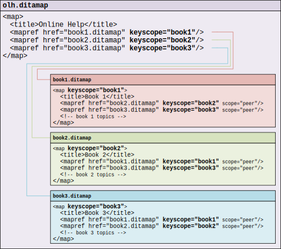

Cross-Book Links
We use cross-book links in our DITA books, and I wanted to share some of our experiences in using them.
A cross-book link is a link that crosses book boundaries. More specifically, it is a link from a topic in one book to another topic in another book. Cross-book links are made possible by the introduction of keyscopes in DITA 1.3. For more about keyscopes, see the related blog post, DITA 1.3 Key Scopes - Next Generation of Reuse.
References to "book" in this article apply equally to both <map>
and <bookmap> maps.
To define a cross-book link, two components are needed:
-
In the source book map, a peer map reference defines a keyscope for each target map that might be referenced by a cross-book link:
<map> <title>Book 1</title> <mapref href="book2.ditamap" keyscope="book2" processing-role="resource-only" scope="peer"/> ... </map>In DITA, a peer map is a map that exists alongside your current map. It is a declaration of another map's existence, but not an inclusion of that map for processing or publication.
-
To create a cross-book link in a source book topic, use a
keyref(key-based) reference to the target topic that includes the keyscope prefix for the target book:<xref keyref="book2.topic2">topic 2</xref>
The following example shows a simple case with two books, each containing a topic that references a topic in the other book:
processing-role="resource-only" from <mapref
scope="peer"> elements for brevity. Although the DITA-OT implicitly treats
peer map references as resource-only by default, we do explicitly define their
processing role in our books.Cross-book <xref> elements must explicitly contain their target text
inside them. Although Oxygen automatically resolves and displays cross-book link target
text during authoring, the DITA-OT does not resolve or include the target text during
publishing (because peer maps are not processed). As a result, you must manually include
the target text inside cross-book link elements.
Oxygen provides good support for creating cross-book links in its authoring environment. You can create cross-book links in two ways:
-
Choosing a scoped key from the Cross reference insertion dialog box
-
Doing a drag-and-drop operation from the source book in the DITA Maps Manager view into the topic editing window
-
Doing a Copy of the target topic's
<topic>element, then a where you want the link
After you create the link, check that the @keyref value uses the
expected keyscope value. If not, check that the map context in the DITA Maps
Manager is set to the source map so that the link is created within the
correct source context. This can be done either by setting the context drop-down to
<Current map> and ensuring that the source map tab is
selected, or by explicitly setting the context drop-down to the source map (but remember
to change it back if you do this).
An interesting cross-book link problem occurred when we started reusing topics across books. We encountered a case where (1) multiple books reused the same topic, and (2) that topic had cross-book links to topics in those books:
In this example, the shared.dita topic is included in both book1 and
book2, and it contains references to other topics in those books. The link to
book1.topic1 was broken for the topic instance in book1 (because
book1 had no knowledge of a "book1" keyscope), but the same link worked
for the topic instance in book 2 (because book2 had a "book1" peer map
keyscope defined). A similar issue happened for the link to
book2.topic2 in book2.
The solution was to define local map-level keyscopes for book1 and book2:
This allowed keyscoped links in reused topics to always resolve properly, whether they pointed to a topic in the same book or a peer map book.
If you use local map-level keyscopes, be sure to use Oxygen 24.0 or later to author your content. It contains some fixes to create cross-book links properly in locally keyscoped map contexts.
If you use cross-book links, it is important to understand how the DITA-OT handles them. When a book containing cross-book links is published by itself, the cross-book link elements are accepted syntactically, but during processing they become unresolved links because the target peer maps are not processed. To fix the links, you can run some kind of post-processing utility on the final set of published content. For HTML-based output (such as WebHelp), we use the following utility:
https://github.com/chrispy-snps/DITA-fix-xbook-html-links
(We do not yet have a solution for cross-book links in our PDF output, but we plan to look into it in the future.)
But, something very interesting happens when these books are published together as part of a higher-level "collection" map:
Note that the top-level "collection" map includes each book map within its relevant keyscope. As a result, links that were "cross-book" in the individual maps automatically resolve and become local links in the higher-level collection map! And because these links resolve during publishing, no post-processing is needed.
When a keyscoped <mapref> points to a map that has its own local
map-level keyscope, the keyscopes are not cascaded. Instead, a single keyscope with
the union of keyscope values is used, so that any keyscope in the union can be used
to reference into the map. For details, see 2.3.4.2 Key scopes.
This demonstrates a very useful aspect of keyscoped links between books—links automatically become cross-book or local as needed, depending on what is included in publishing. This gives you the freedom to publish books individually, in a single collection, or in multiple collections. And you can even rearrange books across collections, all without having to modify any links in the DITA source.